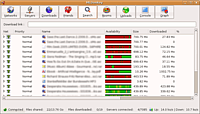
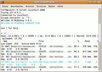
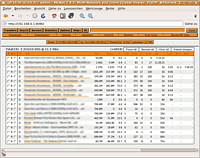
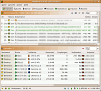

MLDonkey
Dieser Artikel wurde für die folgenden Ubuntu-Versionen getestet:
Dieser Artikel ist mit keiner aktuell unterstützten Ubuntu-Version getestet! Bitte diesen Artikel testen und das getestet-Tag entsprechend anpassen.
Zum Verständnis dieses Artikels sind folgende Seiten hilfreich:
Der MLDonkey Client  ist ein eDonkey-Client. Er war der erste Open Source Client, mit dem auf das eDonkey-Netzwerk zugegriffen werden konnte. Ursprünglich als reines Linux-Programm entwickelt, läuft es inzwischen auf einer Vielzahl von Betriebssystemen, darunter auch Windows, Mac OS X und MorphOS.
ist ein eDonkey-Client. Er war der erste Open Source Client, mit dem auf das eDonkey-Netzwerk zugegriffen werden konnte. Ursprünglich als reines Linux-Programm entwickelt, läuft es inzwischen auf einer Vielzahl von Betriebssystemen, darunter auch Windows, Mac OS X und MorphOS.
Die Server-Komponente von MLDonkey läuft als Dienst (Daemon) auf dem Computer. Die große Stärke des MLDonkeys liegt in der Trennung zwischen Kern (Core) und grafischer Oberfläche (GUI), d.h. MLDonkey besitzt keine eingebaute grafische Oberfläche. Diese Trennung ist insbesondere attraktiv, um den Kern von einem anderen Rechner aus zu steuern. Hierbei muss der Zugriff von außen natürlich sowohl in der Firewall (des Routers) als auch im Core selbst freigegeben werden, und der Nutzer sollte ein langes, schwer zu erratendes Passwort für den Zugriff auf den Core verwenden.
Zur Steuerung des MLDonkey-Servers gibt es mehrere Möglichkeiten:
Telnet:
telnet 127.0.0.1 4000Webinterface: über
http://127.0.0.1:4080kann mit einem Browser auf das HTTP-Interface zugegriffen werdenGrafische Oberfläche: MLDonkey verfügt über ein eigenes GUI-Protokoll, über das mit externen GUIs der Server gesteuert werden kann
Daneben unterstützt MLDonkey eine Vielzahl von anderen Filesharing-Netzwerken, wie z.B. Overnet, Kademlia, Bittorrent, Gnutella (Bearshare, Limewire, etc.), G2 (Shareaza), Fasttrack (Kazaa, Imesh, Grobster), Soulseek (beta), Direct-Connect (alpha) und Opennap (alpha). Die gewünschten Netzwerke können einzeln aktiviert bzw. deaktiviert werden. Benutzerdefinierte Suchen erfolgen parallel in den ausgewählten Netzwerken.
Installation¶
Folgendes Paket muss installiert [1] werden:
mldonkey-server (universe)
 mit apturl
mit apturl
Paketliste zum Kopieren:
sudo apt-get install mldonkey-server
sudo aptitude install mldonkey-server
Auch eine grafische Oberfläche zu MLDonkey lässt sich über die Paketverwaltung installieren. Diese nutzt GTK:
mldonkey-gui (universe)
mit apturl
Paketliste zum Kopieren:
sudo apt-get install mldonkey-gui
sudo aptitude install mldonkey-gui
Nutzung¶
Server¶
Starten¶
Bei der Installation von mldonkey-server wird man gefragt, ob der Server automatisch oder manuell gestartet werden soll.
Hierfür wird das Skript /etc/init.d/mldonkey-server angelegt. Außerdem wird ein Benutzer mldonkey erstellt, unter dessen Kennung der Server läuft.
Konfiguration¶
Hier wird die Konfiguration über Telnet beschrieben. Es gibt natürlich auch die Möglichkeit, die Konfiguration über die GUI oder das Webinterface vorzunehmen. Aber die Vorgehensweise über Telnet funktioniert auch, wenn Client und Server auf verschiedenen Rechnern laufen [2].
Verbindung aufbauen:
telnet localhost 4000
Als erstes das
admin-Passwort ändern:passwd geheim
Erlaubte IPs für den Zugriff angeben (wenn der Client auf einem anderen Rechner laufen soll):
set allowed_ips "127.0.0.1 192.168.1.99"
Prüfen, ob die Ports korrekt freigegeben sind und Anzeige der verwendeten Ports:
portinfo force_porttest porttest
Wenn das Ergebnis dieses Tests nicht ähnlich wie in folgendem Beispiel aussieht, müssen in der Firewall noch die entsprechenden Ports freigegeben bzw. auf dem Router Ports zum Rechner, auf dem MLDonkey läuft, weitergeleitet werden (siehe auch Portweiterleitung).
--Portinfo--
Network | Port|Type
----------+------+-------------------
BitTorrent| ****|client_port TCP
BitTorrent| ****|tracker_port TCP
Core | ****|http_port
Core | ****|telnet_port
Core | ****|gui_port
Donkey | ****|client_port TCP
Donkey | ****|client_port UDP
Donkey | *****|overnet_port TCP+UDP
--Porttest--
----- BitTorrent: -----
Porttest finished 0m 2s ago
Port test OK!
----- Donkey: -----
Porttest finished 0m 1s ago
Testing IP: ********************
Starting TCP connection test...
TCP test successful.
Now testing UDP...
Sending UDP packet...
Waiting for result...
UDP test successful.
Connection test finished.Clients¶
Wie schon erwähnt ist die Oberfläche vom eigentlich P2P-Server getrennt. Um MLDonkey zu steuern, gibt es eine Reihe von Programmen, die die Verbindung zum MLDonkey Server herstellen.
MLDonkey bringt seine eigene GUI mit. Die originale GUI basiert auf GTK, ist also eine GNOME Anwendung. Neben Versionen für Linux gibt es sie auch für Windows und Mac OS X. Die MLDonkey GUI 2 ist recht eigenwillig gestaltet. Man kann aber auch zu Alternativen wie Sancho (siehe unten) greifen.

MLDonkey GUI¶
MLDonkey GUI ist ein GTK+-Interface für den MLDonkey-Server. Neben Versionen für Linux gibt es sie auch für Windows und Mac OS X.
Gestartet wird sie nach der Installation des Pakets über "Anwendungen -> Internet -> MLDonkey". Für den Zugriff auf einen entfernten Server muss allerdings noch die Datei ~/.mldonkey/mlgui.ini [2] angepasst werden. Alternativ kann folgender Befehl in einem Terminal verwendet werden:
mlgui

Telnet¶
Der Zugang über Telnet ist sicherlich nur etwas für Puristen. Er eignet sich für Schnelltests oder wenn man nur per ssh auf den eigenen Rechner kommt. Die Darstellung des Interfaces erfolgt als Text. Für das schnelle Übermitteln eines Links ist sie sicherlich ausreichend, doch auf lange Sicht bedient niemand MLDonkey über Telnet. Der Befehl lautet:
telnet localhost 4001
Achtung!
Aufgrund massiver Sicherheitsprobleme des Telnet-Protokolls (Daten werden nicht verschlüsselt) sollte man den Zugang zum Rechner per Telnet nicht über das Netzwerk ermöglichen. Nur der eigene Rechner - sprich localhost - ist halbwegs ok.

Webinterface¶
Das Web Interface ist sicherlich die praktischste und schnellste Möglichkeit, MLDonkey zu bedienen. Man kann sie von jedem Rechner aus nutzen (aber nur Rechner, die auch bei allowed_ips eingetragen wurden!), ohne Software installieren zu müssen.
Um sich zur Weboberfläche des MLDonkeys zu verbinden, muss man nur folgende Adresse in seinen Browser eingeben:
Und schon kann man MLDonkey steuern.
Für Firefox gibt es eine ältere Erweiterung Mozilla MLdonkey/eMule Protocol Handler , mit der man ed2k-Links direkt an den MLDonkey-Server übermitteln kann. Inwieweit sich diese mit aktuellen Firefox-Versionen nutzen lässt, wurde nicht getestet.

Sancho¶
Die komfortabelste Methode ist sicherlich die Sancho GUI. Sancho ist ein Open Source Oberfläche für MLDonkey. Das Layout erinnert stark an emule und Co. Sancho und MLDonkey zusammen ergeben ein gutes Paar, um einfach Filesharing betreiben zu können.
Links¶
Des Esels Kern - Mldonkey und Kmldonkey
 - Artikel aus LinuxUser 02/2005
- Artikel aus LinuxUser 02/2005Filesharing
 weitere Programme
weitere Programme
- Erstellt mit Inyoka
-
 2004 – 2017 ubuntuusers.de • Einige Rechte vorbehalten
2004 – 2017 ubuntuusers.de • Einige Rechte vorbehalten
Lizenz • Kontakt • Datenschutz • Impressum • Serverstatus -
Serverhousing gespendet von